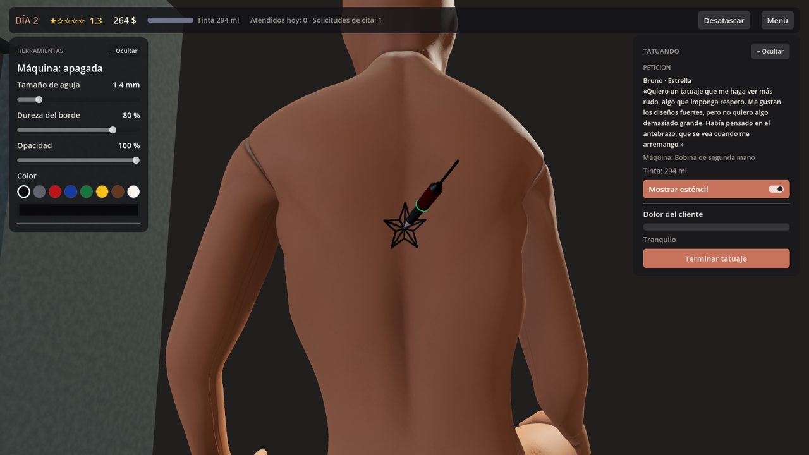
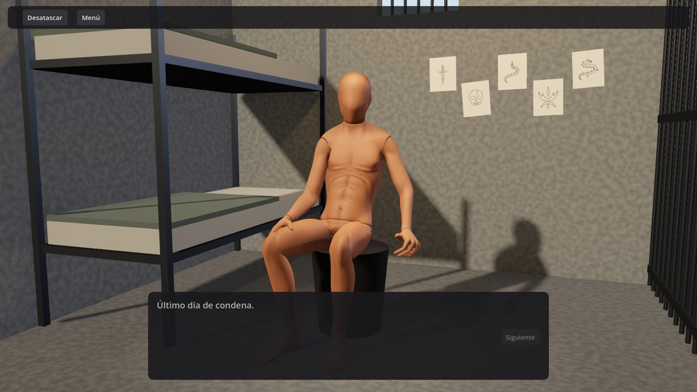
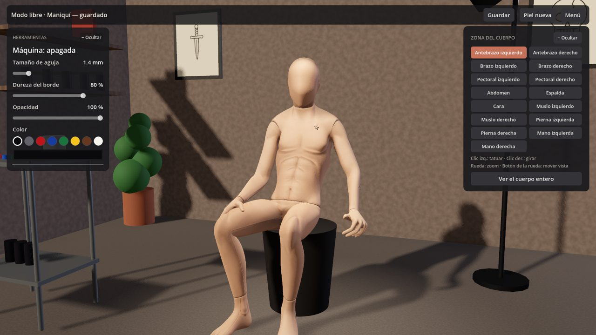
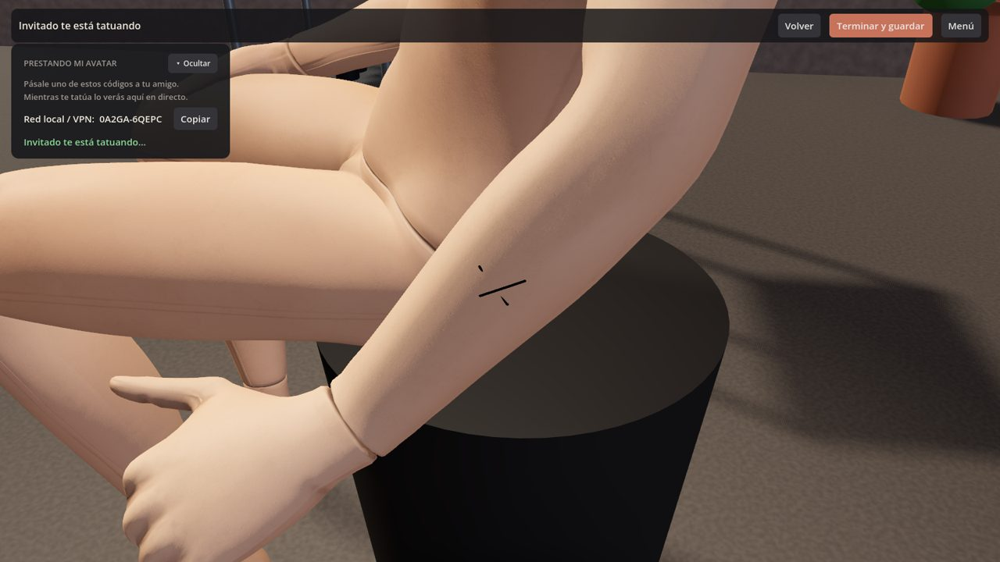

Estudio
La partida: tutorial, días, citas, clientes, reputación, tinta, máquinas y diseños.
Último día en la cárcel. Mañana sales libre… y con una máquina de segunda mano vas a abrir tu propio estudio.

Un simulador de estudio de tatuajes en el que tatúas a mano: sigues la línea del esténcil sobre la piel de un cliente que se mueve, se queja y paga según lo bien que lo hagas.
Empiezas en la celda, haciéndole una estrella a tu compañero con una máquina casera. Al salir alquilas un local pequeño y te toca levantar tu propio estudio.
Atiendes citas, eliges diseños de tu cuaderno de bocetos, colocas el esténcil, tatúas, sacas la foto para la pared y cobras. Con cada trabajo bien hecho sube tu reputación y llegan clientes nuevos que pagan más.
| Acción | Control |
|---|---|
| Tatuar (enciende la máquina) | Mantener Clic izq. |
| Girar la cámara | Mantener Clic der. o Espacio y mover el ratón |
| Acercar / alejar | Rueda |
| Mover la vista | Mantener el botón de la rueda y mover el ratón |
| Tamaño de aguja | [ ] o + − (o el control del panel) |
| Mover el esténcil | Clic / arrastrar sobre la piel |
| Rotar el esténcil | Q E |
| Usar algo de la recepción | Clic sobre el objeto (se ilumina al pasar por encima) |
| Pasar página del cuaderno | ← → |
| Plegar un panel | Botón − Ocultar de su cabecera |
Se puede jugar con tableta gráfica (sin presión). Si el lápiz hace clic pero no mueve la máquina, cambia el driver con el botón Tableta gráfica del menú principal. Si algo no aparece en el estudio, pulsa Desatascar en la barra superior.

La partida: tutorial, días, citas, clientes, reputación, tinta, máquinas y diseños.

Un maniquí para practicar en cualquier zona, sin dolor ni dinero. Lo que tatúas se guarda.

Presta tu avatar con un código y tu amigo te tatúa en directo; lo que te hace se queda en tu avatar.
.rar..exe) de la carpeta. Si Windows muestra «Windows protegió su PC», pulsa Más información → Ejecutar de todas formas: aparece porque la demo no está firmada.La partida se guarda sola en %APPDATA%\Godot\app_userdata\Tattoo Studio Simulator. Para desinstalar, borra la carpeta del juego (y esa carpeta si quieres borrar también el progreso).